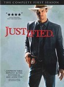
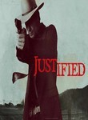

Justified
Stephen Klancher
...has seen 1
...has seen 0 hours
...has not seen 1.3 hours

Timeline
Most Recent:
Fire in the Hole
First Unseen:
Riverbrook (# 2)
...has seen 1
...has seen 0 hours
...has not seen 1.3 hours
Timeline
Most Recent:
Fire in the Hole
First Unseen:
Riverbrook (# 2)


